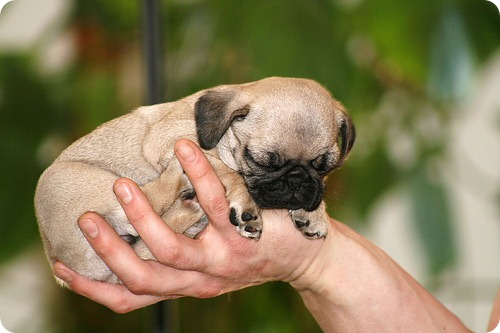
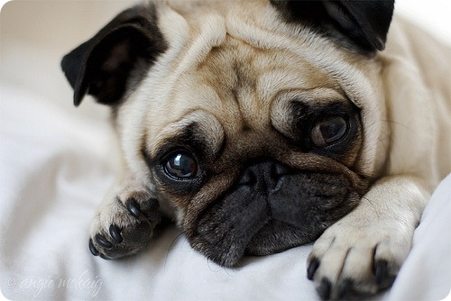

Схоже, що мопсові відведено особливе місце поряд з людиною. Історія породи мопс починається з часів китайських династій. Ці маленькі плюшеві собачки були незмінними супутниками царствених осіб. Однак, не потрібно думати, що мопс — лише кумедна іграшка для порожніх розваг. Навпаки, така близькість до кращих дворах Китаю і Європи говорить про те, що собачка, крім суто декоративних функцій, володіє винятковими достоїнствами одного, компаньйона і помічника.
І все ж перший секрет популярності породи собачок мопс — це незвичайна зовнішність. Темні блискучі очі, заховані в м’яких виразних зморшках, мавпяча мордочка, короткі лапи і хвіст гачком — чудо з чудес, та й тільки. Прогулянка з мопсом — це відмінне джерело позитиву і нескінченного задоволення ! Мопс стає центром загальної уваги, і рідко кому вдається стримати посмішку при вигляді дивовижного створення, важливо провідного свого господаря на повідку. А діти… Діти просто пищать від захвату!
Треба сказати, що до сучасному зовнішньому вигляду мопса доклали руку англійці. До Європи ця порода собак потрапила, завдяки голландським морякам, а потім над зовнішністю мопса злегка «поворожили» англійські селекціонери. Кремезне коротколапих тіло, квадратний лоб і тупий ніс — їх рук справа. У китайських «прототипів» статура було трохи витонченіше, а мордочка гостріше.
Незважаючи на незвичайний зовнішній вигляд породи, не варто ставиться до цієї собаці виключно, як до іграшки. Повірте, мопс здатний стати вам справжнім, вірним і відданим другом. У разі небезпеки він заступиться за свого господаря і буде захищати його до останнього. Дружелюбність, відкритість, здатність ладити як з людьми, так і з іншими тваринами, роблять мопса повноцінним членом сім’ї. Цей малюк буде незмінно активно брати участь у всіх ваших справах і, так — трохи плутатися під ногами.
Відомо, що в Китаї мопсів використовували як мисливських собак, але навіть тут яскраво виявлялася своєрідна життєва позиція цих тварин — до місця полювання їх, як і імператора, доставляли на особливих ношах. І цей історичний факт нинішні власники мопсів схильні пов’язувати аж ніяк не з лінню і нахабством тваринного, а з тим вродженим почуттям власної гідності, яке відрізняє мопса від інших собак.
Популярність мопсів у росіян зросла після виходу в світ книг Донцової, а також фільму «Люди в чорному», де мила і незграбна товста собачка на коротких ніжках зіграла роль суперагента.
Види, стандарти і різновиди
Рідкісний різновид породи — чорний мопс. На картині К. Брекеленкама «Кравецька майстерня» 1653 можна побачити чорного мопса, однак племінне розведення цього рідкісного виду почалося тільки в 1886 році. До цього часу фахівці не особливо цінували чорних мопсів і знищували «нестандартних» цуценят.
Засновниками роду чорних мопсів, занесеними до реєстраційної книги, є Неп — друге, Джек Спретт і його дочка Бессі Спретт — собаки, яких привезла з Китаю до Англії мандрівниця леді Бресс. Достеменно відомо, що така порода вже існувала в Англії як мінімум пару століть. Однак, саме леді Бресс спровокувала інтерес до незвичайних песикам, представивши їх на Мадісонской виставці в 1886 році, де чорні мопси відразу стали чемпіонами в своїх класах.
Вибір цуценя мопса
Вибираючи цуценя мопса, який стане новим членом сім’ї та іншому, покладайтеся на своє емоційне сприйняття та інтуїцію. Якщо вам складно вибрати «свого» цуценя з усіх цих милих м’яких грудочок, дозвольте цуценяті зробити вибір самостійно. Відійдіть подалі — той щеня, який першим до вас підбіжить, і буде вашим новим улюбленцем.
Проте варто все ж врахувати породистість цуценя, його характер, недоліки і переваги. Для цього поговоріть з заводчиком, який зможе професійно підібрати вам відповідного цуценя.
Якщо ж ви купуєте цуценя для участі виставок і племінного розведення, до вибору потрібно підходити більш грунтовно, і, звичайно ж, не варто шукати пропозицій мопса в дар. Звернувшись в розплідник або до заводчику, необхідно перевірити цуценя на відповідність стандарту породи, дізнатися про родовід цуценя. Непогано було б скористатися консультацією стороннього професійного кінолога, який відразу визначить чемпіонські перспективи цуценя.
Особливості утримання, догляд, здоров’я
Мопс — гладкошерстная собака і не вимагає особливого догляду, однак і у неї є своя ахіллесова п’ята. В тій чи іншій мірі кожна собака цієї породи схильна вродженому хронічного захворювання — ерозії рогівки. Ця проблема вирішується препаратами йоду, антибіотиками і вітаміном А.
Що стосується харчування, то в цілому мопси невибагливі в їжі. Ветеринари рекомендують годувати їх два три — рази на день невеликими порціями, щоб уникнути переїдання, зберегти пружність м’язів і активність.
У вашого мопса також має бути своє містечко в квартирі, де собака зможе відпочивати і спати. Воно повинно розташовуватися в житловій кімнаті або в коридорі, але ні в якому разі не на кухні, далеко від батарей, дверей і протягів. В якості лежанки може виступати як простий щільний килимок, так і спеціальні ліжечка, які у величезній асортименті представлені в спеціалізованих магазинах.
Вигулювати дорослих мопсів рекомендується 2 рази на день — вранці і ввечері, цуценят і молодих собак — 2-4 рази на день. На прогулянці слід давати собаці фізичне навантаження: можна грати в активні, рухливі ігри або виконувати прості вправи. Майте на увазі, що мопси, будучи декоративної породою, не пристосовані до тривалих прогулянок. Крім того, мопси погано переносять спеку і мороз, а також схильні алергій.
Регулярно проводите огляд своєї собаки: стану вух, вовни, шкіри, складок на морді, області між пальцями лап, очей і зубів собаки, кінцівок. При наявності виділень в очах вихованця, очистіть їх за допомогою ватного тампона, змоченого в простій воді або слабкому настої ромашки, календули. Вуха очищають ватяними паличками, змоченими в спирті або очищеному рослинному маслі.
Особливості в’язки мопса
Розведення цуценят — справа фахівців. Заводчики -аматори не знають тонкощів схрещування, а тому зовнішній вигляд потомства може піднести масу неприємних сюрпризів. Якщо ви все ж хочете спробувати свої сили, ось кілька практичних порад, які допоможуть вам у цій справі.
За місяць до в’язки необхідно дати сукі мопса антигістамінні препарати і привести в норму її вагу. Тварина для спарювання має бути не молодше 6-10 місяців. Сука готова до запліднення приблизно на 10-13 день з початку тічки. Це також можна визначити за виділенням, які стають блідими і мізерними.
На «побаченні» собакам потрібно дати час звикнути до один одного. Під час загравання партнерів, організм тварин підготовляється до спаровування.
В’язку необхідно повторити через 2-3 дні, щоб забезпечити стовідсоткову ймовірність запліднення. Період вагітності мопса — 63 дні.
Одяг для мопса
Чи є необхідність в одязі для мопса, кожен господар може вирішити самостійно, врахувавши переваги тваринного і кліматичні умови проживання. Деякі мопси спокійно бігають «босоніж» по снігу при температурі -25С, інші навідріз відмовляються гуляти в таку погоду без теплої курточки та черевиків.
Якщо ваш вихованець не проти, ви можете одягати його і просто для краси. Зоомагазини і спеціалізовані сайти пропонують величезний вибір одягу та аксесуарів на будь-який смак. Великою популярністю у власників мопсів користується пошиття одягу на замовлення, так як готова одяг не завжди підходить по довжині і розміром.
Розплідники і клуби
У російських мопсів є свій національних клуб породи. Крім того, в Москві та Петербурзі ви знайдете регіональні клуби породи, в яких завжди зможете отримати необхідну інформацію з виховання, догляду та утримання вашого мопсик, про участь у виставках і конкурсах, про розведення собак.
У багатьох великих містах Росії є розплідники, в яких можна придбати породистого і здорового цуценя. У реєстрі національного клубу породи зареєстровані розплідники в Москві, Санкт -Петербурзі, Обнінську, Смоленську, Челябінську, Новосибірську, Твері, Самарі, Краснодарі та інші.